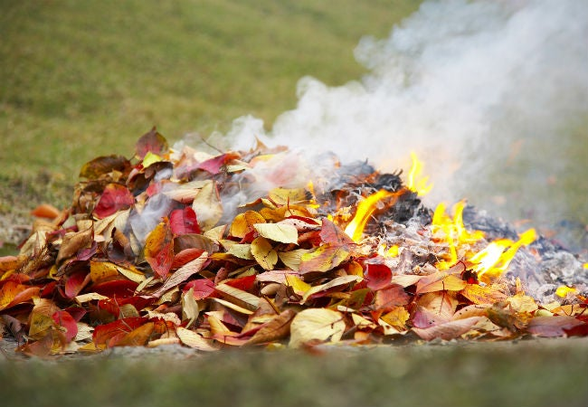

Case Study 1: Fighting fire with leaves
Forest fires are a nightmare and result in ecological disasters
that are
impossible to control through conventional methods. I realised we are fighting a war with
the age-old conventional methods of dousing fires by beating them with bushes and tree
branches." Vikas tells The Better India.

During his research to stop Jharkhand's horrendous forest fires, Vikas Ujjwal, Divisional
Forest Officer of Jharkhand's Lohardaga district, came across a Class 6 physics chapter.
According to the 'Fire Triangle' chapter, forest fires can be attributed to three components
— fuel, heat and oxygen. Considering that there is possibly no way of tackling heat and
oxygen, Vikas focussed on the
'fuel' aspect, which in Lohardaga's case was heaps of fallen leaves.
With one stroke, Vikas addressed the village's fire and unemployment issues. He installed a
machine to convert dry leaves into briquettes, an eco-friendly artificial fuelwood. This
innovative project began in April 2019 and has borne remarkable results. It also aligns with
the National Action Plan on Forest Fire, which provides a forest floor biomass management
framework. Since its inception, the forests of Jharkhand's Tisiya region have remained free
from major fires.
What's even more remarkable is the ripple effect that followed. The briquettes became a
potent solution for fire prevention and economic prosperity. Villagers have discontinued the
illegal cutting of wood and stopped burning leaves, which are now an asset. The villagers
were initially sceptical about whether selling leaves could generate income,
but ecotourism success stories later inspired them. Vikas assured them of a guaranteed
income with a step-by-step process.

A Joint Forest Management Committee (JFMC) comprising 15 people from different villages
oversees the entire briquette plant. The plant can process 1 tonne of leaves daily and
employs 400 people from 13 villages.
The initiative has reduced fire by 80% and has developed a source of income for the
villagers by selling the briquettes in the local market. In response to the transformation,
villagers have ardently requested more of these plants. Vikas, buoyed by their enthusiasm,
has promised to fulfil their requests. Lohardaga's forest department and its people
represent how ecological preservation and
economic growth can go hand-in-hand, setting an inspiring precedent for others.
This case study highlights how a scientific principle and an innovative approach can lead to
holistic transformation, promoting sustainable forest management and improving livelihoods.